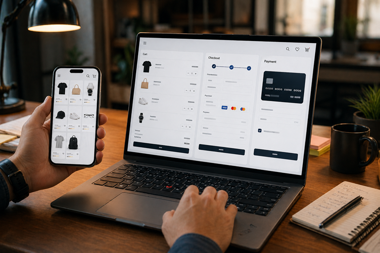
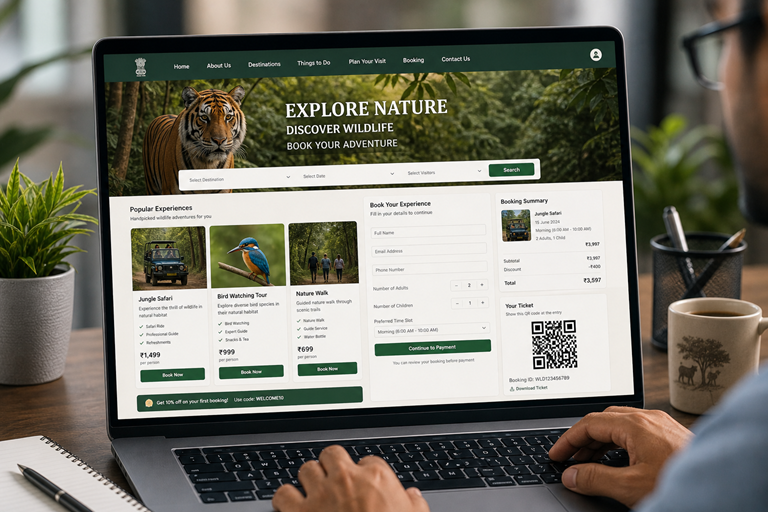
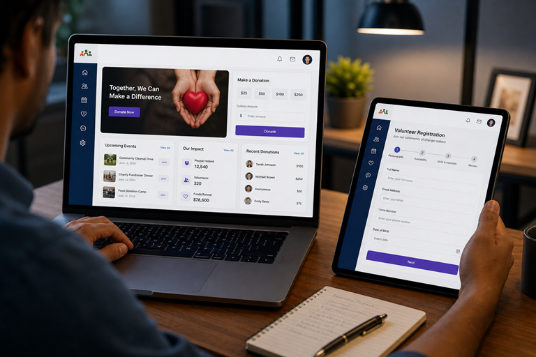

Professional manual software testing services for startups, businesses, and enterprises to ensure reliable, bug-free, and user-friendly applications.
Manual testing is the process of manually verifying software for defects and ensuring it meets the specified requirements. Unlike automation, it relies on human intuition and observation to identify usability issues, edge cases, and visual inconsistencies that scripts might overlook.
As an expert freelance QA engineer, I bring a user-centric approach to manual testing. I simulate real-world user behavior to ensure your application isn't just functional, but also intuitive and delightful to use.
High-converting manual testing solutions tailored for modern software needs.
Verifying every feature works according to your business requirements.
Ensuring new updates don't break existing features or introduce bugs.
Quick verification of build stability before deep testing begins.
Checking visual consistency and intuitive user journeys.
Comprehensive coverage for every aspect of your application.
Tailored testing solutions for various business domains.
Get agency-grade testing at a fraction of the cost, with direct communication.
Precise steps to reproduce, screenshots, and logs for every defect found.
Simulating actual user journeys to find hidden bottlenecks and UI glitches.
Seamlessly integrating with your development team in sprints.
"Faster release confidence with rigorous manual validation that ensures your product is ready for the market."
Let's Talk QualityA structured approach to ensure nothing gets missed.
Understanding business goals and user stories.
Defining scope, resources, and timelines.
Running test cases and exploratory testing.
Logging defects with detailed documentation.
Regression and sign-off for release.
Real projects where I delivered flawless quality.
Comprehensive testing of checkout flows, payment gateway integrations, and product search functionality for a large-scale retailer.

Validating patient data security, appointment scheduling, and laboratory report accessibility for a medical services provider.

Functional testing of high-traffic public service portals, ensuring accessibility compliance and robust form handling.

Testing food delivery and community apps for cross-device compatibility, real-time tracking accuracy, and battery performance.
Everything you need to know about my manual testing services.
Manual testing is a software testing process where testers manually execute test cases without using any automation tools. It focuses on finding bugs through the eyes of a real user.
It is critical for identifying usability issues, exploratory bugs, and visual defects that automated scripts might miss. It provides a human perspective on the software's quality.
Yes, I provide high-quality remote manual testing services globally, collaborating seamlessly with your team via Slack, JIRA, and Trello.
I have experience testing E-commerce, Healthcare, Fintech, Food Delivery, and Government portals across web and mobile platforms.
Pricing varies based on project scope, complexity, and duration. I offer competitive freelance rates for both project-based and hourly engagements.
Hire a professional QA Engineer to ensure your application is stable, reliable, and bug-free before release.